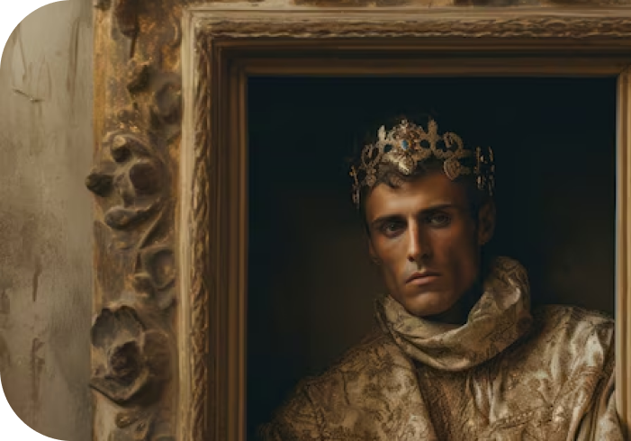

Развивается готическое направление. Стиль готика прочно связан с церковью точнее, с её идеей "маленького человека". Господь велик, а человек пред ним - песчинка, всё готическое искусство было направлено на подавление человека - величественные, огромные храмы и прочие строения, которые просто "давили" прихожан своей мощью и незыблемостью.
Искусство
Также существовал романский стиль, пришедший из Рима. Характерные черты романского стиля – мощные стены с узкими окнами, почти лишенные украшений, массивные башни с шатровыми вершинами, полукруглые арки. Простота и строгость линий подчеркивает устремленность вверх.